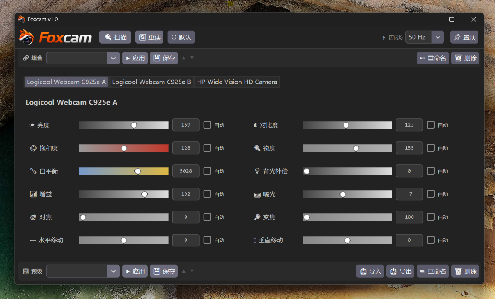

Foxcam
一款轻量 Windows 桌面应用，用于实时控制 UVC 摄像头参数
A lightweight Windows desktop app for real-time UVC camera control

功能特性
Features
多摄像头Multi-camera
同时检测和控制多个 USB 摄像头
Detect and control multiple USB cameras
实时调节Real-time
亮度、对比度、饱和度、白平衡等
Brightness, contrast, saturation, white balance
自动/手动Auto/Manual
每个参数可独立切换模式
Toggle mode per parameter
预设与组合Presets & Combos
保存配置，跨摄像头一键应用
Save configs, apply across cameras
拖拽排序Drag & Drop
拖拽排列标签，顺序自动记忆
Reorder tabs, order remembered
导入导出Import/Export
在不同电脑间分享预设
Share presets between machines
下载
Download
Windows 10/11 · 无需 Python · 解压即用
Windows 10/11 · No Python required · Extract & run